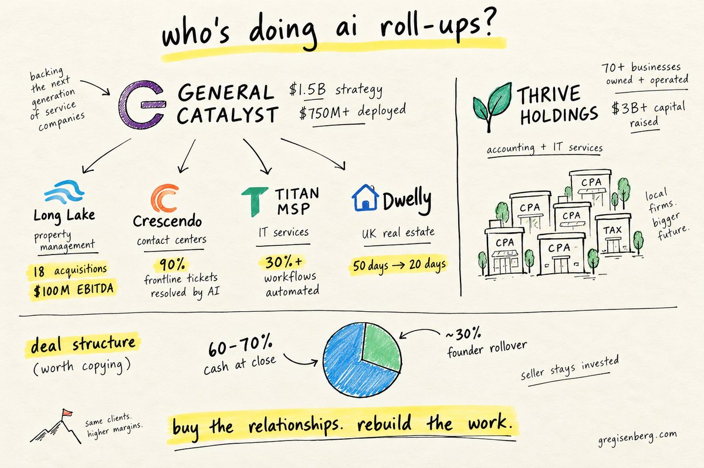
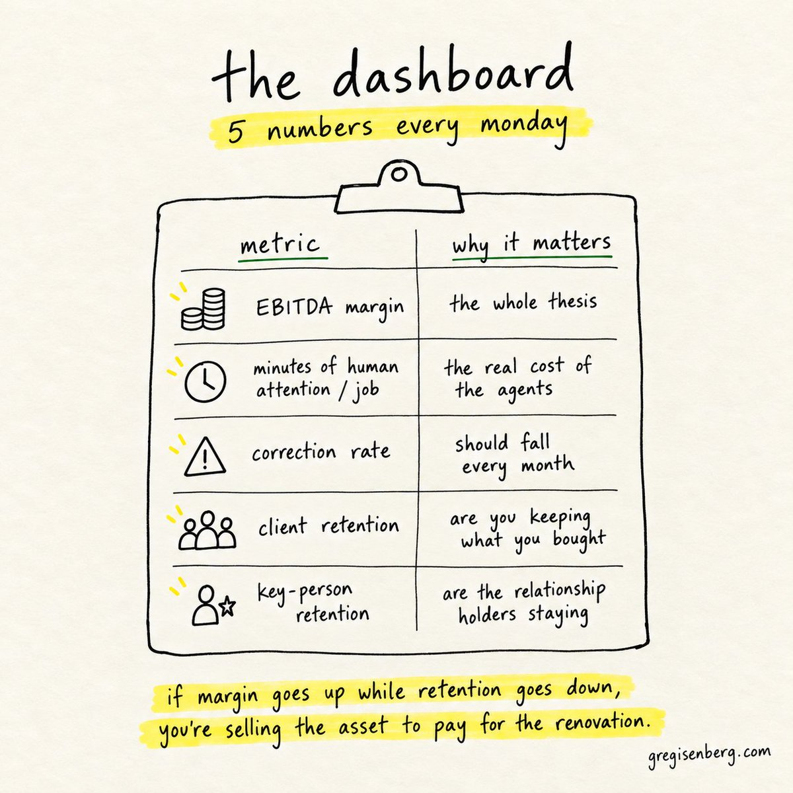
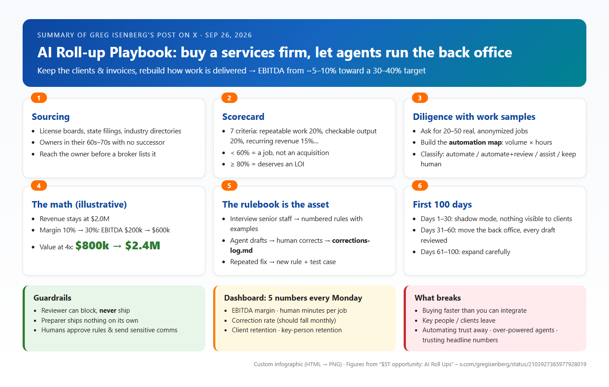
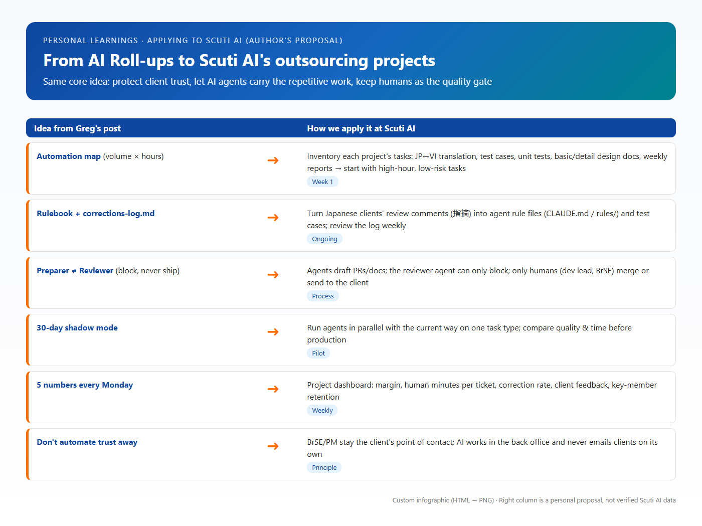

Contents
1. The original post & how the source was accessed
The assigned link (x.com/gregisenberg/status/2103927365977928019) is not a short tweet but an X Article (a 10–15 minute read) titled “$5T opportunity: AI Roll Ups”, published on September 26, 2026. Greg Isenberg is CEO of Late Checkout (LCA) and hosts The Startup Ideas Podcast.
Engagement numbers as recorded when reading the post (Oct 3, 2026). Bookmarks outnumber likes roughly 3 to 1 — readers treat it as a reference to come back to.
How the content was obtained (source transparency)
- Opening x.com directly in Chrome (logged out): X shows only the title, cover, engagement counts and the first few paragraphs; the rest fades out behind a “Continue to X” button and a “Log in or sign up for X” panel. No credentials were typed and no account was created.
- The full Article (title, every paragraph, 8 illustrations) was read through the public fxtwitter.com viewer. Everything summarized below is based on that content.
- For readability, the article was copied into a clean local reading page (
sources/article-reader.html) with the original text unchanged.
2. The core message
Instead of building an AI product and then hunting for customers, buy a “boring” services business that already has the customers, the licenses and the trust — then use AI agents to rebuild how the work gets done. Revenue and clients stay the same, the cost per unit of work falls, and profit can grow 3–4x.
Greg opens with a macro number: according to McKinsey, about $5 trillion of US businesses will change hands by 2035, mostly owned by retiring baby boomers with no successor. His first example is Larson Gross, an accounting firm founded in 1949 with ~200 staff in which Thrive Holdings bought a stake: this tax season its AI processed 7,000 returns, accountants saved 31% of their time on average, and one recurring job dropped from 180 hours a year to 15.
What stood out to me: the post doesn't stop at “nice idea”. It goes all the way down to folder structures, agent lists and concrete prompts — an operating playbook, not just an investment thesis.
3. Specific insights
3.1. AI roll-ups are “the new private equity”
A roll-up is an old play: buy many small firms in one industry so the combined company is worth more than the parts. PE has done it for 40 years mostly through financial engineering (shared back office, better vendor contracts, debt, resale). An AI roll-up changes the middle step: buy a services business at a services price, then let agents take over a large share of delivery. Greg's thesis: EBITDA margins of 5–10% can move to 30–40%.
3.2. Why now: three forces at once
- Models are good enough at real work — data entry, draft tax returns, contract review, support tickets. Two years ago output had to be redone; now it only needs checking.
- Owners are retiring — children don't want the firm, employees can't afford to buy it.
- The arithmetic works — services firms trade at low multiples because margins are assumed to be stuck. Prove otherwise and you bought at a discount.
3.3. Who is doing it
| Company | Industry | Results cited in the post |
|---|---|---|
| Long Lake | Property management | 18 acquisitions, $100M EBITDA in under two years, margins doubled |
| Crescendo | Contact centers | 90% of frontline tickets resolved by AI, 4x the margins of traditional operators |
| Titan MSP | IT services | 30%+ of workflows automated, targeting tripled net margins |
| Dwelly | UK real estate | Problem resolution down from 50 to 20 days, margins doubled |
| Thrive Holdings | Accounting | Nearly 50 local practices bought in two years, $1B more committed |
| General Catalyst | Investor | $1.5B set aside for the strategy, $750M+ into at least ten companies |
Greg's own caveat: these numbers are self-reported by young companies that are raising money and haven't been through a recession. GC's deal structure is worth copying: roughly 60–70% cash at close and ~30% rolled into equity for the founder, so the relationship holder stays to make the handoff work.

3.4. Not only for billion-dollar funds
The counter-intuitive but convincing part: Greg argues big funds will leave most of the market to individuals because:
- Funds need big deals; a $2M-revenue bookkeeping firm is too small to matter — yet most businesses about to change hands are that size.
- The tools are the same: Larson Gross's tax agents run on OpenAI Codex; a solo founder can build the workflows with Claude Code or Codex in the evenings.
- The biggest roll-up risk is integration lag. A person who buys one firm is the integration layer — in the office, knowing every client, watching every agent draft.
- Many owners would rather sell to a person than to a fund met on Zoom.
- Financing for this size already exists (SBA loans, seller notes).
3.5. Why buy instead of build
The hard parts of a services business aren't software: a client list built over 30 years, personal trust, licenses that took exams and time, and the niche knowledge of what “correct” means. The firm's history — every edge case, every caught mistake — is training material for the agents that a startup simply doesn't have. A startup must win the customer and do the work; an acquisition already has the customer and only needs to change the work.
3.6. The folder structure is the operating model
Before buying anything, Greg sets up a /holdco folder with /thesis, /deals, /platform (agents, rules, tests), /firms and /runbooks; every acquired firm plugs into the same shape. If you set up nothing else, set up three files:
target-criteria.md— decides what you buy.rules/— decides whether agents can be trusted.corrections-log.md— how the rules improve every week.

Agents come in two sets: before the deal (sourcing, diligence, modeling — humans pick and decide) and after the deal (rulebook extractor, intake, preparer, reviewer, client comms, reporting — humans approve rules and send sensitive communications). The key design decision: the reviewer can block but never ship, and the preparer ships nothing on its own.

3.7. Six steps from sourcing to operating
| Step | What to do | Key point |
|---|---|---|
| 1. Sourcing | Find unlisted firms via licensing boards, state filings, industry directories; write to the owner yourself | Once a firm hits a marketplace, most of the “alpha” is gone |
| 2. Scorecard | Score 7 weighted criteria (repeatable work, checkable output, recurring revenue, motivated seller, client loyalty to the firm, clean data, fragmented market) | Under 60% is a job; above 80% deserves an LOI |
| 3. Diligence | Collect 20–50 real work samples and have AI build an automation map: trigger, inputs, time, frequency, checkability, cost of error | Volume × hours shows where the margin is before signing |
| 4. The math | Example: $2M revenue, margin 10% → 30%, EBITDA $200k → $600k; at 4x, value $800k → $2.4M | The whole game is holding the margin |
| 5. Rulebook | First 60 days: interview senior staff, turn tacit knowledge into rules with examples; weekly, turn the corrections log into new rules + test cases | Everyone has the same models; nobody has your list of failure modes |
| 6. First 100 days | 1–30: shadow mode, nothing visible to clients; 31–60: move the back office with every draft reviewed; 61–100: expand carefully | By day 100 know: what agents do reliably, real review cost, who important is unhappy |
3.8. Rulebook and corrections log are the moat
Every firm runs on unwritten rules: the client who's always late with documents, the deduction the senior partner always double-checks, the phrasing one client finds rude. When seniors leave, the rules leave too. Greg shares two prompts: one to interview senior staff and turn answers into numbered rules (active only after they approve), and one to compare agent drafts with human-approved versions, classify each change (factual error, client preference, missing info, style) and propose rules for repeated corrections.
3.9. Five numbers every Monday
EBITDA margin, minutes of human attention per job (the real cost of the agents), correction rate (should fall monthly), client retention and key-person retention. My favourite line: if margin rises while retention falls, you're selling the asset to pay for the renovation.

3.10. What to buy and what breaks
Good fits: accounting/bookkeeping, property management, insurance agencies, IT managed services, medical billing, payroll, HOA management, title & escrow, freight brokerage, staffing — repeatable work, checkable output, recurring clients, fragmented ownership, many owners near retirement.
Six failure modes Greg warns about
- Buying faster than you can integrate.
- Key people leave and take relationships with them.
- Clients loyal to the old owner leave with the owner.
- Automating trust away — margin comes from the back office, value from the relationship.
- Agents with too much authority (e.g. emailing clients without a checkpoint).
- Believing headline numbers — underwrite on your own numbers.
4. Playbook infographic
The whole post on one page: six steps, guardrails, dashboard and risks. Figures come from the post; layout and wording are mine.

5. Personal learnings
- The edge isn't the model, it's the niche's rules. Everyone can rent the same model. The difference is the rulebook accumulated from hundreds of corrections. For an outsourcing company, that's the client and domain knowledge currently scattered across chats and people's heads.
- Trust is the most expensive asset — don't automate it away. Margin comes from the back office, value from relationships. AI belongs behind the counter; people stay client-facing.
- Measure “human minutes per job”, not “% automated”. An agent that produces many drafts but needs long reviews isn't cheap. This metric is far more honest than the feeling that “AI can do it now”.
- Separate the right to create from the right to approve. “The reviewer can block, never ship” is a design rule I'll carry into every agent workflow.
- Be sceptical of pretty numbers. Even while pitching the opportunity, the author notes results are self-reported and untested by a downturn. When proposing AI to clients, we should show our own project measurements rather than quote others' benchmarks.
I'm not buying a company, but the model maps almost one-to-one onto how a software services company operates: the clients and the trust already exist; the job is to change how the work is delivered.
6. Applying it at Scuti AI
Scuti AI is an AI/software outsourcing company in Vietnam serving Japanese clients. At its core it is also a services business: recurring clients, repeatable processes (specs, document translation, code, tests, reports) and demanding quality standards. So Greg's ideas map quite directly. The table below is my personal proposal, not verified company data.

6.1. Quick guide: 5 steps to start in one project
Build the project's automation map (week 1). List repeatable tasks: JP↔VI document translation, test cases from specs, unit tests, basic/detail design updates, weekly reports. Record times/month × hours/time and classify: automate now / automate + review / assist only / keep human.
Create the agent rulebook. Interview the dev lead and BrSE about common junior mistakes and client-specific requirements (coding conventions, document formats, keigo). Store as rules/ or CLAUDE.md in the repo, each rule with an example.
Run shadow mode on one task type for ~30 days. Agents work in parallel while people work as usual; compare quality and time. Nothing agent-made goes to the client yet.
Log every human correction of agent output — especially review comments (指摘) from Japanese clients. Weekly, corrections seen twice or more become new rules + test cases.
Review five numbers every Monday internally: project margin, human minutes per ticket, correction rate, client feedback, key-member retention.
6.2. Ready-to-use templates
The rows above illustrate the format only; they are not real project data.
6.3. In daily operations
- Clear agent permissions: agents may create PRs, draft documents and translations; the review agent may block PRs; only humans merge and send emails/documents to clients.
- BrSE/PM remain the face to Japanese clients. AI speeds up preparation; it doesn't replace people in meetings or sensitive conversations.
- Keep knowledge when people rotate: the rulebook and corrections log stop newcomers repeating old mistakes — “get the rules out of people's heads and into files”.
- Report with our own numbers: when proposing AI to clients, use shadow-mode measurements rather than internet benchmarks.
7. Demo video
The video walks through reading the post and putting the summary together: open the post on x.com → hit the login wall → open the full version on fxtwitter → read the article in the clean reading page → view both infographics → open the finished blog and scroll top to bottom.
8. Conclusion
Greg Isenberg's post is a practical playbook: buy trust that already exists, use AI agents to rebuild the back office, keep humans at the checkpoints, and measure with real numbers every week. For Scuti AI the biggest value isn't buying companies but three habits we can start now:
- Build an automation map per project to decide what AI should do first.
- Maintain a rulebook + corrections log so every fix becomes an asset.
- Separate agent create/approve rights and track five numbers weekly.
References
- Greg Isenberg – “$5T opportunity: AI Roll Ups” (X, Sep 26, 2026)
- fxtwitter – public view of the post (actual content source used)
- Local copies:
sources/article-text.md,sources/article-reader.html